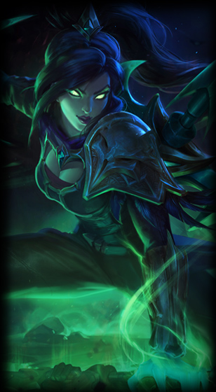

Biography
Jian "Uzi" Zi-Hao (Hanzi: 简自豪) is a League of Legends esports player, currently bot laner for Royal Never Give Up. There is a disambiguation page associated with the name Uzi. One other player shares this ID.
Season 2
Uzi started his career on Royal Club. He joined the team in October of 2012 and quickly rose to prominence as a highly skilled mechanical player
Season 3
Royal Club performed well domestically and qualified for the Season 3 World Championship after becoming the Chinese champion. Because of their status as first seed from China, the team was automatically put into the Quarterfinals. Their first match was against their rivals from China OMG. Royal Club was able to defeat them 2-0 to advance. In the Semifinals they faced off against Fnatic and despite dropping a game, they won 3-1 and moved into the finals. Their final opponent was SK Telecom T1 but despite their huge momentum, they were unable to even take a game off of the very powerful SKT squad and got swept 0-3. This ended their tournament run with a respectable 2nd place finish.
Season 4
In 2014, Royal Club re-branded to Star Horn Royal Club. With Tabe and Wh1t3zZ's retirement, Uzi moved to mid lane. The transition however didn't go so well and Uzi moved back to ADC in the Summer season of the LPL. The team brought Korean imports inSec and Zero to the line-up and despite inconsistent performances, they qualified for the 2014 World Championship. At Worlds, they were placed in Group B along with Taipei Assassins, Team SoloMid and SK Gaming. They only dropped a game to Team SoloMid. Star Horn Royal Club advanced to the Quarterfinals where they faced EDward Gaming. After a very close series, they emerged victorious 3-2 and advanced. In the Semifinals they faced off against their other Chinese rivals OMG. In yet another very close and thrilling series, the team defeated OMG and advanced to the finals. This made Uzi the first player to play in 2 consecutive World Finals. Star Horn Royal Club wasn't given much of a chance because their opponent in the finals was the unstoppable Samsung Galaxy White. They ultimately lost 1-3 which ended their run in 2nd place yet again.
Season 5
During the 2015 Season, Uzi moved to OMG in one of the biggest roster moves in LPL history. Despite the hype around the transfer, it didn't turn out so well for OMG. While they started off strong in the first weeks of the Spring Split, they dropped off and were hit with internal issues. Ultimately they got swept 0-3 at the 2015 LPL Spring Playoffs by LGD Gaming in the Quarterfinals. The Summer Split didn't go much better for OMG. They finished 7th in the regular season and in the playoffs they were only able to defeat Master3 3-0 in the first round before they lost 1-3 to Vici Gaming.
Season 6
Uzi left OMG and joined Qiao Gu Reapers in December of 2015. QG attended the IEM Season X - World Championship but had a poor showing, falling to Fnatic 1-2 in Round 2 of the Loser's Bracket and finished 5th/6th. The 2016 Season of the LPL started well for Qiao Gu. They wend undefeated in the first 4 weeks of play, won 7 Bo3 matches and only dropped a single game. The remaining 6 weeks didn't go as well for them as they lost 5 series matches and only won 4. Despite their poor second half of the regular season, the team still finished 1st in their group and was automatically placed in the Semifinals. Their playoff run didn't last long however. Qiao Gu was plagued with internal conflict and they forfeited their Semifinal match vs EDG due to being unable to field a mid laner. The team was able to play in the third-place match with Peco as starting mid laner but they were swept 0:3 by Team WE. In the summer of 2016, Uzi would leave QG and join Royal Never Give Up. RNG's Summer Split did not go as well as expected. While they secured 1st place in Group B with 13 wins and 3 losses, their performance in the playoffs dropped and they lost convincingly to EDward Gaming in the Summer Finals. They still qualified for the 2016 Season World Championship through championship points. At Worlds Royal Never Give Up was drawn in Group D with Team SoloMid, Samsung Galaxy and Splyce. After they won twice against TSM, Royal was able to advance to the Quarterfinals as 2nd place in their group due to their head to head record against TSM. In the Quarterfinals they faced off against SK Telecom T1 and lost 1-3. Post-worlds they had a few tournament appearances. First at the 2016 Demacia Cup where they finished 3rd/4th after losing 1-3 to Edward Gaming in the semifinals and then at NEST 2016 where they would finish 4th after two consecutive series losses against Invictus Gaming and Snake Esports. Uzi later attended the 2016 All-Star Event winning it with Team Ice and also winning the 1v1 tournament after taking down Maple in the finals.
Season 7
After Mata and Looper's departures, Royal Never Give Up picked up LetMe for the top lane and Ming as their new support. Uzi mentored Ming in the young player's first few splits. The team finished 1st place in Group A of the 2017 LPL Spring Season with a 12-4 regular season record. In the playoffs although they made it to the finals, they lost 0-3 in dominating fashion to Team WE. The 2017 LPL Summer Season was very similar as RNG finished again in 1st place with the same 12-4 regular season record, only this time in Group B. The playoffs went similarly to the spring playoffs for the team. They made it all the way to the finals again but lost 2-3 to EDward Gaming in a reverse sweep this time. At the 2017 Season World Championship RNG was placed into Group C along with eventual tournament winners Samsung Galaxy, as well as G2 Esports and 1907 Fenerbahçe Esports. The team performed incredibly well in their group and went 5-1. They only dropped one game to G2 Esports. In the Quarterfinals their opponent was Fnatic and they defeated them 3-1 in convincing fashion. RNG's Worlds run ended in the Semifinals after a 2-3 loss to SK Telecom T1 in a very close series.
Trivia
- As a highly mechanical AD carry, he would have a high expectation for his support, with Tabe being the only one he deemed worthy of being in equal authority in the bot lane in all the 3 support changes in the team
- Notorious for his temper and condescending attitude.
- Mechanics alone, he was considered to be even superior to WeiXiao, but lacked the charisma and the discipline of the latter.
- Nicknamed "小狗", meaning puppy in Chinese, resulting in the general strategy that Royal Club Huang Zu uses to be dubbed "养狗战术" which means "Raise the puppy", a similar strategy and team composition the Counter Logic Gaming used to "Protect the Doublelift", as both AD carries had great potential to carry games with late game hypercarries.
- Likes to use a pink keyboard (FILCO F87).
- Famous for his Vayne.
- LMQ coach Eno Li has expressed desire to bring Uzi to North America to play for his team.
- He and Caps are the only two non-Korean players to have appeared twice consecutively in the Championship Final.
- It makes him to be the only pro player to have more than one Championship Final appearances at the point of 2014, before being tied by bengi and Faker at 2015.
- Suffers from shoulder injury and considers retirement.
- He is the player with highest CS/M in every single season of LPL he participated since 2015.
- Has a really unique champion pool.
- He is good at most marksman with a dash ability, such as Vayne, Caitlyn, Ezreal.
- And for some marksman with no dash ability, he will never pick them in professional games even they might be the best choice in patch, such as Draven.
- He is good friend of another Uzi.
| Uzi | ||
|---|---|---|
|
1 / 3

Uzi
2 / 3

Vayne
3 / 3

Lucian
|
||
| Background Information | ||
| Name | Jian Zi-Hao (简自豪) | |
| Country of Birth |
|
|
| Birthday | April 5, 1997 (age 23) | |
| Residency |
CN China |
|
| Competitive | ||
| Team | Royal Never Give Up | |
| Role | Bot Laner | |
| Soloqueue IDs | EUW: tttttttttttt0214 KR: tingtingkaisong, 로얄 Uzi, 같이인천여행, FNC Rekkles1 CN: 少女壮士tingting, 峡谷下饭员 |
|
| Social Media & Links | ||
|
||